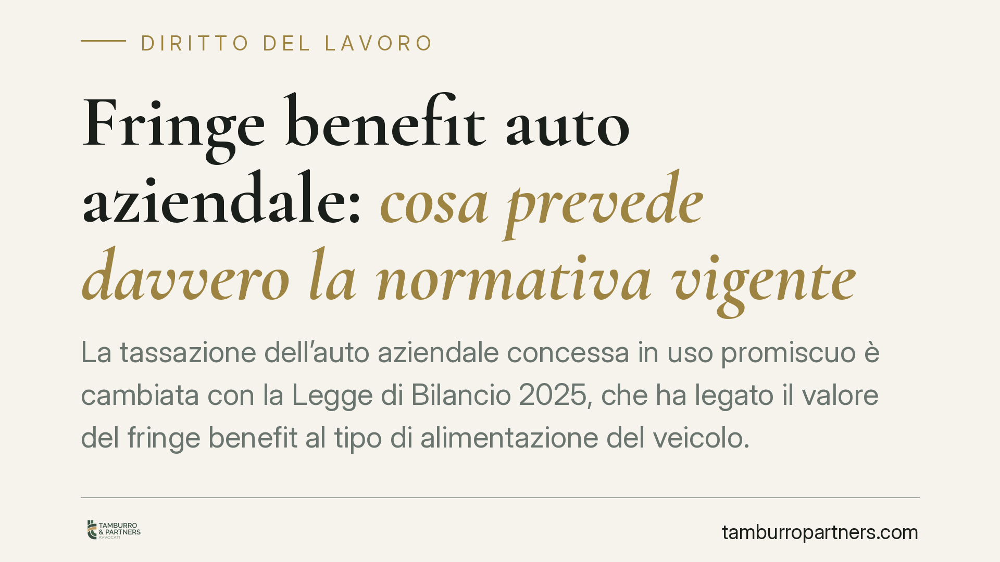

Fringe benefit auto aziendale: cosa prevede davvero la normativa vigente
La tassazione dell'auto aziendale concessa in uso promiscuo è cambiata con la Legge di Bilancio 2025, che ha legato il valore del fringe benefit al tipo di alimentazione del veicolo. Circolano però ricostruzioni su ulteriori maggiorazioni basate su fonti non confermate. Facciamo chiarezza su ciò che risulta effettivamente in vigore e su ciò che resta da verificare.

Il fatto
Negli ultimi mesi sono circolate notizie su presunte nuove maggiorazioni del fringe benefit per le auto aziendali: un incremento del 50% dopo cinque anni dall'immatricolazione, un +5% per gli optional non valorizzati e il ritorno alla deducibilità delle trattenute in busta paga. Tali previsioni vengono ricondotte a un "correttivo Omnibus" identificato come D.lgs. 148/2026.
Una precisazione doverosa: al momento non risulta verificabile, su fonti ufficiali (Gazzetta Ufficiale, Normattiva), un D.lgs. 148/2026 che introduca le maggiorazioni descritte. Finché il provvedimento non sia effettivamente pubblicato e consultabile nel testo ufficiale, quelle percentuali vanno trattate come dato non confermato e non come diritto vigente. Per uno studio legale, riferire una disciplina fiscale come applicabile prima di tale verifica sarebbe scorretto.
Ciò che invece è certo è il quadro normativo attualmente applicabile, che riepiloghiamo di seguito.
Inquadramento normativo
Il fringe benefit è il valore economico del bene o servizio che il datore di lavoro mette a disposizione del dipendente anche per fini privati. Per l'auto aziendale a uso promiscuo — cioè utilizzata sia per lavoro sia nella sfera personale — la base imponibile è determinata in via forfetaria dall'art. 51, comma 4, lett. a), del TUIR (D.P.R. 917/1986).
Il criterio non misura l'uso privato effettivo: assume convenzionalmente una percorrenza di 15.000 km annui, applicando a questa una percentuale del costo chilometrico ricavato dalle tabelle ACI, al netto di quanto eventualmente trattenuto al dipendente.
La Legge di Bilancio 2025 (L. 207/2024) ha riscritto le percentuali applicabili ai veicoli di nuova immatricolazione e concessi a partire dal 1° gennaio 2025, legandole alla modalità di alimentazione:
- 10% per i veicoli elettrici (a batteria);
- 20% per i veicoli ibridi plug-in;
- 50% per tutti gli altri veicoli (endotermici, benzina, diesel).
Il criterio ha invertito la logica precedente, basata sulle emissioni di CO₂: l'obiettivo dichiarato è incentivare la mobilità elettrica attraverso un trattamento fiscale più favorevole.
Implicazioni pratiche
Per il datore di lavoro. La scelta del veicolo da inserire in flotta incide direttamente sul costo del lavoro: a parità di modello, un'alimentazione tradizionale genera un imponibile nettamente superiore rispetto a un elettrico. La car policy aziendale e i contratti di noleggio a lungo termine andrebbero riletti alla luce di queste percentuali, soprattutto per i rinnovi.
Per il dipendente. Il fringe benefit concorre alla formazione del reddito imponibile: un valore più alto significa maggiore ritenuta in busta paga. Le somme eventualmente trattenute dal dipendente a fronte dell'uso del veicolo riducono la base imponibile, come previsto dalla norma.
Resta aperto il tema del regime transitorio: per i veicoli immatricolati o assegnati prima del 2025 continuano ad applicarsi i criteri previgenti, con possibili differenze di trattamento tra veicoli della stessa flotta. Su questo punto occorre monitorare eventuali chiarimenti dell'Agenzia delle Entrate.
Quanto alle ipotizzate maggiorazioni dopo cinque anni e per gli optional, non vanno applicate né comunicate ai dipendenti fino alla pubblicazione ufficiale del testo normativo di riferimento. Un'applicazione anticipata basata su notizie non confermate esporrebbe l'azienda a errori di calcolo nelle ritenute.
Cosa fare in concreto
- Verificare la fonte prima di aggiornare i calcoli: consultare il testo ufficiale in Gazzetta Ufficiale o Normattiva e distinguere tra norma vigente, schema di decreto e semplice notizia di stampa.
- Censire la flotta distinguendo i veicoli per data di immatricolazione, data di assegnazione e tipo di alimentazione, così da individuare quale regime si applica a ciascun mezzo.
- Rileggere la car policy e i contratti di noleggio in essere, valutando l'impatto delle percentuali vigenti sui rinnovi e sulle nuove assegnazioni.
- Allineare il calcolo delle ritenute in busta paga al criterio effettivamente applicabile, coordinandosi con il consulente del lavoro, e tenere traccia delle trattenute a carico del dipendente che riducono l'imponibile.
- Monitorare gli aggiornamenti normativi e di prassi: una volta pubblicate eventuali novità, aggiornare tempestivamente policy e cedolini.
È opportuno che la gestione fiscale della flotta sia verificata caso per caso, poiché la combinazione tra data di immatricolazione, assegnazione e tipo di veicolo può condurre a esiti diversi.
---
*Contributo informativo a cura di Tamburro & Partners - Avv. Giuseppe Tamburro. Non costituisce parere legale.*
Ogni storia di lavoro ha i suoi tempi.
Se gestisci HR e vuoi un confronto su contenzioso, ispezioni o licenziamenti, scrivi allo studio. Ti rispondiamo entro un giorno lavorativo.